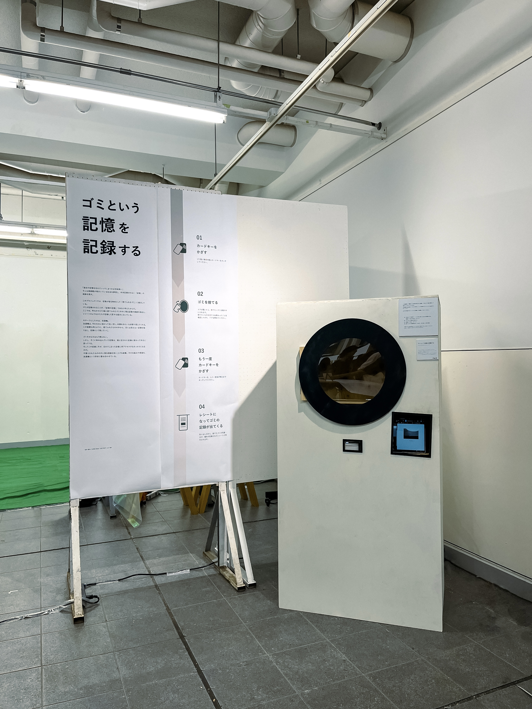

Recording Memories of Waste
2025

CONCEPT
私たちは日常生活の中で、さまざまなものを消費し、不要になったものをゴミとして捨てている。捨てるという行為は日常の中であまりにも当たり前になっており、何を捨てたのか、その行為がどのような記録として残るのかを意識する機会は少ない。
本作品では、普段はすぐに忘れられてしまう「ゴミを捨てる」という行為に着目し、目に見えなくなったものの痕跡を記録として残すことを試みた。
ゴミは、不要になったものとして扱われる一方で、私たちが何を使い、何を消費し、どのように生活しているのかを示すものでもある。捨てられたものを単に消えていく存在として捉えるのではなく、日常生活の一部を映し出す記録として捉え直すことで、普段意識することのない消費や廃棄の行為を見つめ直すきっかけをつくる。
DESIGN & EXPERIENCE
本作品では、カードキーをかざしてからゴミを捨て、再びカードキーをかざすことで、レシート形式の記録が出力される仕組みを制作した。
利用者は、カードキーを認識させ、ゴミを捨て、もう一度カードキーをかざすという一連の動作を通して、普段は意識することのない廃棄の行為を記録として受け取ることになる。日常的なゴミ捨ての動作に、認識と記録、出力というプロセスを加えることで、何気ない行為に新たな意味を与える構成とした。
また、記録を画面上に表示するだけでなく、レシートという身近な媒体を用いて物理的に出力することで、目に見えない行為を手に取ることのできる形へと変換した。普段は捨てた瞬間に意識から離れていくゴミを、記録として手元に残すことで、自分の行為を改めて振り返る体験を生み出している。
ゴミを捨てるという日常的な行為を、記録を生み出す体験へと変換することで、私たちの生活と消費のあり方について考えるきっかけとなることを目指した。